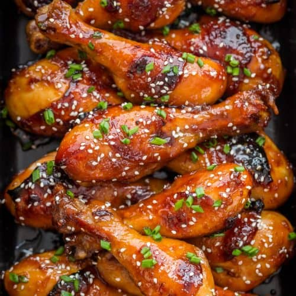

LASAGNA

Honey Garlic Chicken is an epic 12 minute chicken breast recipe with a magic
5 ingredient Honey Garlic Sauce! This is a terrific back pocket quick dinner
idea for busy nights that’s made with pantry staples. It’s quite amazing how so few
ingredients can transform into such a tasty sauce for chicken!
Ingredients
- ¼ cup honey
- 2 tablespoons soy sauce
- ⅛ teaspoon red pepper flakes
- 1 ½ tablespoons olive oil
Steps
- Gather all ingredients.
- Whisk honey, soy sauce, and red pepper flakes in a bowl; set aside.
- Heat olive oil in a skillet over medium heat; cook and stir chicken in hot oil until lightly brown, about 5 minutes.
- Pour honey mixture into the skillet; continue to cook and stir until chicken is no longer pink in the center and sauce is thickened, about 5 minutes more.
- Serve hot and enjoy!